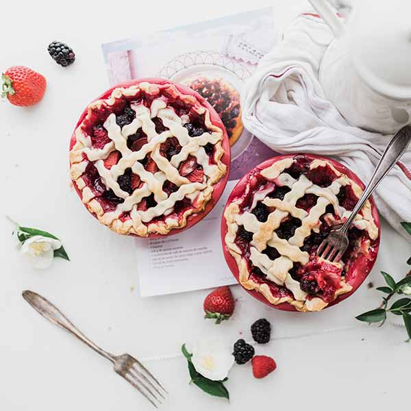
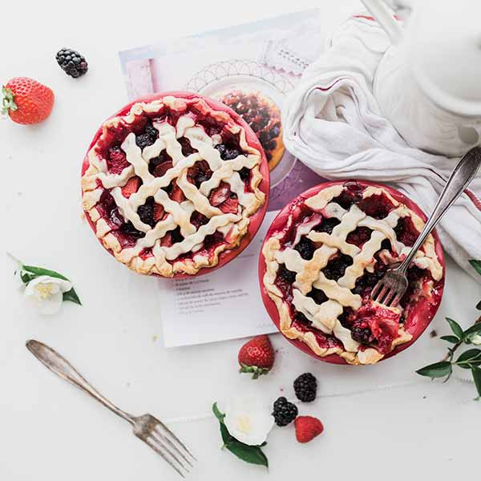

Naše nabídka
Vybraná jídla z našeho jarního menu připravená našimi prvotřídními šefkuchaři.
 


Architektonický skvost láká své hosty atmosférou ve stylu Grand Café již od roku 1922 nejen unikátními keramickými dekoracemi. Kvalitní servis, prvotřídní kuchyně a dostupné ceny v luxusním prostředí - to je resaurace Saturejka.
Saturejka není jen restaurace, ale také kavárna, která navazuje na svou slávu z první republiky. Naše dorty jsou výjimečné svou chutí a jsou vyrobeny z prvotřídních surovin. Dort si můžete vychutnat v krásném prostředí našeho vnitrobloku nebo si jej odnést s sebou.
Jedinečný kulinářský zážitek z jídla v naší restauraci je umocněn prémiovým porcelánem značky Vilém & Švec. Klasická, elegantní a přitom dokonale nadčasová kolekce vás nadchne stejně jako nás. Těšíme se na vaši návštěvu!
Saturejka a její privátní salonky jsou dokonalým místem pro setkání, oslavy či firemní akce.

Losos se zeleninou
Je libo lehčí večeře? Nač hledat, když ji pro vás máme už připravenou! Vyzkoušejte pečeného lososa na bylinkách s dušenou jarní zeleninou a bylinkovým máslem,. Veškeré ryby objednáváme čerstvé u prémiových a ověřených dodavatelů.

Kuřecí tagliatelle
Pochutnejte si na našem tagliatelle s kuřecím masem s bazalkou a smetanovou omáčkou. Vynikající lehký oběd pro slunné jarní dny. Kuřecí maso pochuzí od lokálních dodavatelů z kuřat chovaných pod širým nebem. Těstoviny vyrábíme ručně přimo u nás.

Sladká melancholie
Připomeňte si atmosféru sluncem zalité Provence díky jedinečené sladkokyselé chuťi našeho ctironového dortu s polevou z bílé čokolády. Vychutnejte si jej spolu s hrnkem dobré kávy na naší vnitroblokové zahrádce, která poskytuje útočiště před ruchem velkoměsta.